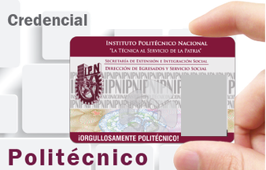

<main class="container-fluid">
    <section class="row">
        <article class="col-xs-offset-1 col-xs-10 col-md-offset-0 col-md-12">
            <section class="row">
                <div class="col-md-offset-1 col-md-10">
                    <br>
                    <h1 class="text-center escomazul">Trámites</h1>
                    <p class="text-center">
                        Solicita en ventanilla el trámite que necesites, verifica los tiempos de entrega de los documentos.
                    </p>

                    <div class="row">
                        <div class="col-xs-12 col-md-3">
                            <h3 class="escomazul text-center">Constancias</h3>
                                
                            <p class="text-center lead">
                                <strong>Tipos de constancias:</strong>
                            <p>
                            <ul>
                                <li>De inscripción</li>
                                <li>De estudios</li>
                                <li>De periodo vacacional</li>
                                <li>De servicio social</li>
                            </ul>
                            <p class="text-center"><strong class="descripcion-importante">La duración del trámite es de 5 a 7 días hábiles.</strong></p>
                        </div>
                        <div class="col-xs-12 col-md-3">
                            <h3 class="escomazul text-center">Boletas</h3>
                            
                            <p class="text-center lead">
                                <strong>Tipos de boletas:</strong>
                            <p>
                            <ul class="lead">
                                <li>Informativas</li>
                                <li>Certificadas</li>
                            </ul>
                            <br><br><br>
                            <p class="text-center" style="margin-top: -5px;"><strong class="descripcion-importante">La duración del trámite es de 7 a 10 días hábiles.</strong></p>
                        </div>
                        <div class="col-xs-12 col-md-3">
                            <h3 class="escomazul text-center">Bajas</h3>
                            
                            <p class="lead text-center  ">
                                <strong>Tipos de bajas:</strong>
                            <p>
                            <ul class="lead">
                                <li>Temporal</li>
                                <li>Definitiva</li>
                                <li>Por modalidad (Escolarizada - No escolarizada)</li>
                            </ul>
                            <p class="text-center">
                                <strong class="descripcion-importante">Realizar una carta dirigida al director donde se especifiquen los motivos por los cuales se solicita la baja y los datos del alumno.(<a href="./view/recursos/documentos/Cartabaja.pdf" target="_blank">Ejemplo</a>)</strong></p>
                        </div>
                        <div class="col-xs-12 col-md-3">
                            <h3 class="escomazul text-center">Resello de credencial</h3>
                                
                            <br><br>
                            <p class="text-center lead">
                                El resello de credencial se realiza directo en ventanilla, es necesario presentar horario actual impreso.
                            <p>
                        </div>
                    </div>
                    <!--<p class="lead">Solicita constancias y boletas en línea <a href="../SSCE" target="_blank">aquí</a>.</p>-->
                </div>
            </section>
            <!-- Go To Top
            ============================================= -->
            <div id="gotoTop" class="icon-angle-up"></div>
        </article>
    </section>
</main>

